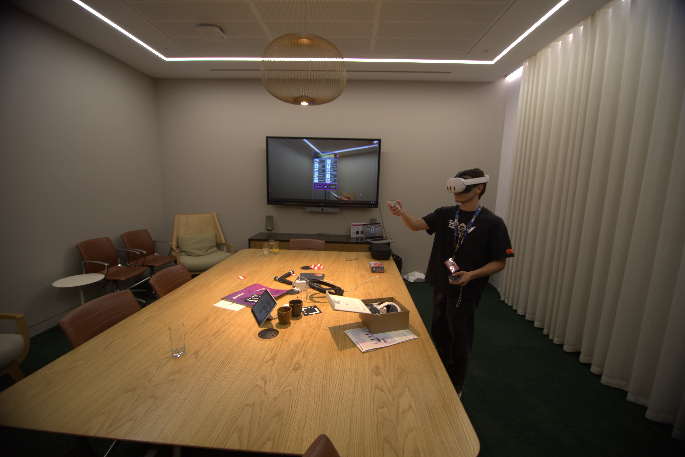

XRBrickView
Stack: Three.js | WebXR
During a three day hackathon my partner and I build a virtual reality lego build previewer. In aim to circumvent the need for conventional paper instructions and make the building of legos more enjoyable.
My role

I was the lead creative director and programmer, it was my quick thinking and creative abilities that brought this idea to the table. My partner was also an invaluable asset to our partnership; providing me with object criticism about design decisions and help package up the project into an APK to ship on the Meta Quest App store.
The task I was responsible for implementing were:
- Controller input.
- UI rendering and functionality.
- Lego model rendering.
I also was responsible for creating the lego instruction files to load into the application.
Presenting
One of my strong suits is that I don’t get nervous in front of big presentations, I can thank those few years in middle school when I took acting classes and performed in front of hundreds of people. So naturally I lead the presentation, being able to speak clearly and point out the features that make our app so amazing.